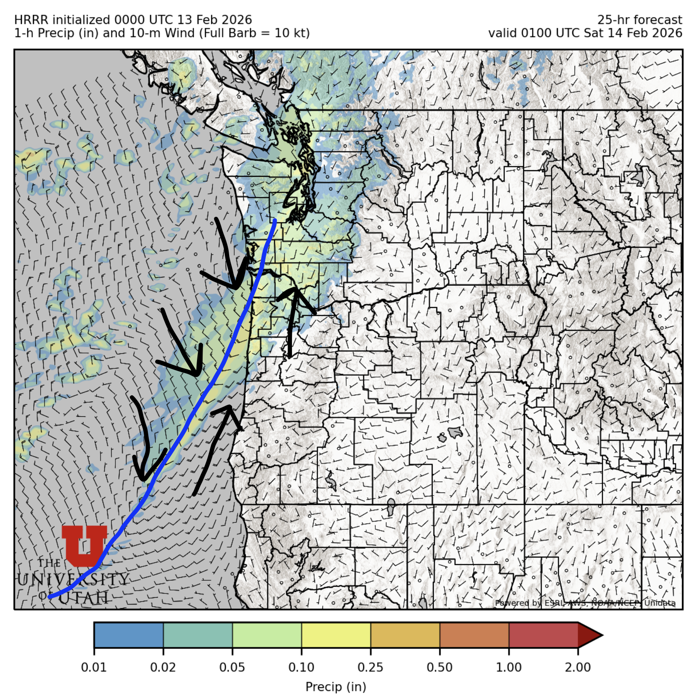
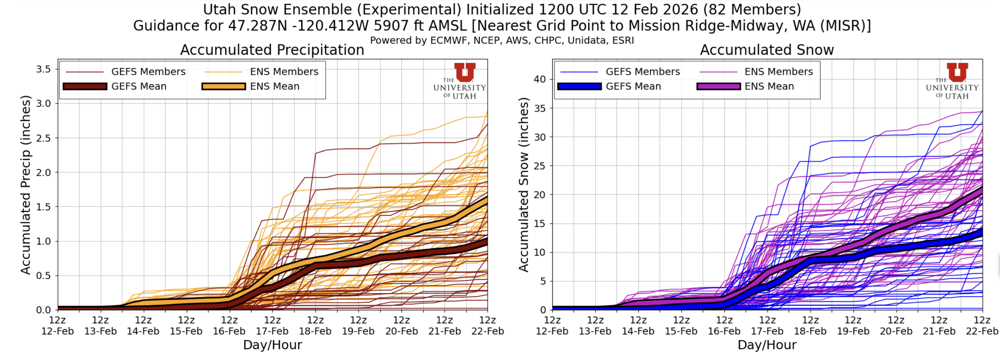
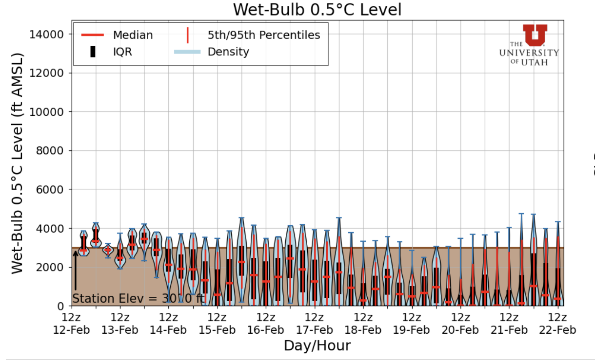
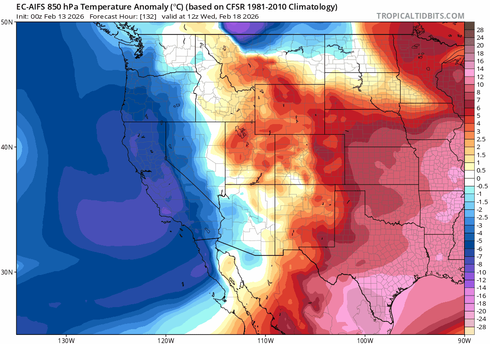

😈 Embrace the chaos: PNW snow forecast somewhere between miracle and monotony
Welcome to The Dendritic Growth Zone!
Past Week's Recap
To quote the great synoptic meteorologist Professor Jim Steenburgh of the University of Utah, "split flow is a four letter word." What does he mean by split flow? Well, over the past 3 days, it has looked like there was a large, sharp rock in the upper atmosphere off the coast of Washington, splitting the jet stream in the upper atmosphere in half. This brought the first storm in weeks to California and Utah while leaving us in the PNW dry and sad (if you're like me and prefer good snow over boring sunny days). This was however a notable change from last weeks dry spell where a dominant ridge of high pressure brought record breaking warmth to the region. This week, we just were dry with seasonably cool temperatures.
Observation Highlight from the Past Week - Cascade Mountain Weather in the news!
With little new snow and no CMW forecaster "evaluation" ski days in the past week, we instead want to highlight a different sort of observation this week. Danny and I were interviewed by NPR Seattle to discuss the lack of snow this winter in Washington. We're on for a minute around the 3:00 mark. Check it out here!
🧙♂️ Forecast Discussion
Short-term (Friday-Sunday)
After many days of dry, a shortwave disturbance runs ashore Friday afternoon as a larger longwave trough of low pressure amplifies and dives south. Annoyingly, the bulk of the forcing (read: atmospheric dynamics that cause precipitation) stays well off shore and stalls for a few days. Expect precipitation to start off light over the Olympics and far Northernwestern WA Cascades (Mt. Baker) around dawn Friday. Precipitation spreads south of US 2 and intensifies (~0.1"/hr rain/SWE) around sunset Friday as a well-defined cold frontal boundary passes through the region. Luckily, temperatures are already rather cool so we should be seeing snow below 3500' across the state and perhaps even at Snoqualmie Pass too because of some weak cold air pooling that still exists.

After the front, scattered showers will continue in the mountains through Saturday morning before tapering off quickly by mid-day Saturday as dry air aloft moves in. There's a pretty decent chance we'll have some sunny skies Sunday across the state as we will once again be mired in the split flow purgatory, silver linings I suppose. If you can't tell by know, I desperately need more new snow in my life. Sun is for July, not February!
Medium-Term (Monday-Wednesday)
This is where the chaotic nature of the atmosphere really takes the reigns! 😈
 
Starting Monday, a series of troughs of low pressure roll down from the Gulf of Alaska. These are glory troughs, filled
to the brim with delicious and refreshing cold air! However, their orientation and development lends themselves to
really high uncertainty. I feel like I often discuss how uncertain forecasting storms in Washington is week in, week out.
Such is life on the edge of a continent with no land observations upstream for thousands of miles.
To look more at this uncertainty, below are the Utah Snow Ensemble plumes for Mission Ridge for the next 10 days.
The range between the best and worst case scenarios is about as wide as it could possibly be. Expect somewhere between
1 to 34 inches of snow with somewhat equal probability of any number within that range. That's uncertainty if I've ever seen it.
🧙🔮🧙♂️ Reading the crystal ball - 7+ day outlook
With such high uncertaintly in the medium-term, I don't have much if any confidence in a longer-term forecast. If I was forced to guess, there is higher confidence in cooler temperatures in the 7-14 day range but precipitation looks murkier.

❄️ Snowfall
Weekend Snow Accumulation Forecast
| Site | Through 4am Saturday | Through 4am Sunday | Weekend Snow Accumulation (4pm Thursday through 4am Monday 16 Feb) |
|---|---|---|---|
| Mt. Baker (4500') | 4-8" | 4-8" | 4-8" |
| Washington Pass | 2-5" | 2-5" | 2-5" |
| Stevens Pass (4500') | 3-6" | 3-6" | 3-6" |
| Hurricane Ridge | 3-6" | 3-6" | 3-6" |
| Blewett Pass | 0-2" | 0-2" | 0-2" |
| Snoqualmie Pass | 2-6" | 2-6" | 2-6" |
| Crystal (5000') | 2-5" | 2-5" | 2-5" |
| Paradise | 6-12" | 6-12" | 6-12" |
| White Pass (5000') | 2-5" | 2-5" | 2-5" |
🧊 Freezing Level
- Friday: 4000-3000 feet
- Saturday: 2500-1500 feet
- Sunday: 3000-1500 feet
🎿 Our Recommendations
Best Choice This Weekend: Be picky! Go high and go shady
Week after week, we seemingly have the same recommendations but here we are. Your best bet this weekend is going to be above 5000' (freezing level from the 7 Feb storm) on north facing/shady aspects away from the trees. We heard rumors that the White Salmon glacier skied really well earlier this week so the goods are out there! You just might have to walk with skis on your back for awhile if not starting at one of the higher trailheads. Baker still had great coverage after the heatwave last week so our forecast 4-8" should ski quite nice.
Runner-Up: Plan your next sick day
This could be an excellent weekend to work on the weekend to play on a weekday, if your work schedule has that sort of flexibility. No guarentee that this upcoming week will pan out but this is the best shot we've had at a refresh in 5+ weeks now.